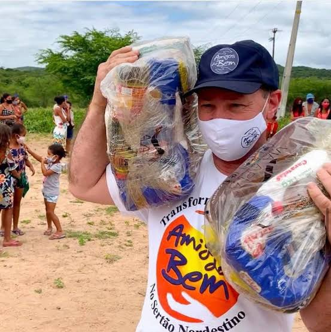
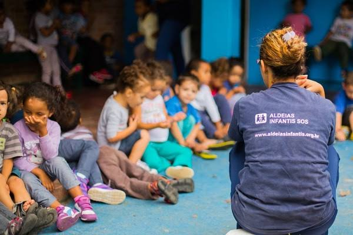
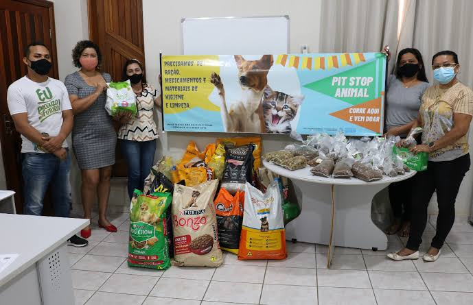
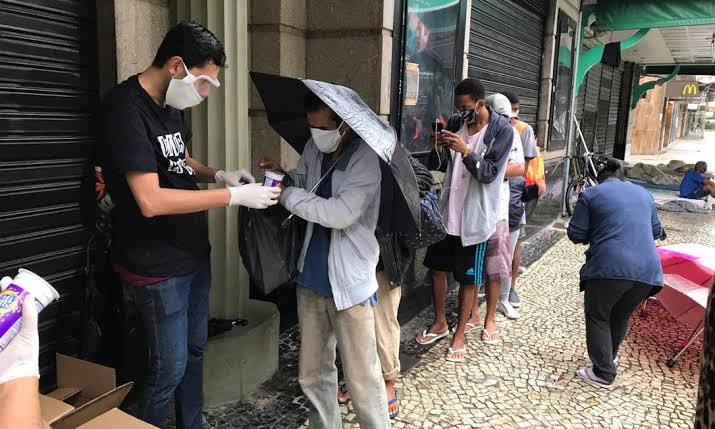

Cidade:
Nome:
Tipo:
Selecione uma opção
ONGs Ambientais
ONGs de Animais
ONGs de Apoio a Mulheres
ONGs de Arte e Cultura
ONGs de Ajuda Humanitária
ONGs de Crianças
ONGs de Educação
ONGs de Direitos Humanos
ONGs de Idosos
ONG de Moradia
ONGs de Saúde
Home
Cadastro
Jornal
Contato
Sobre
Jornal

Ong "Amigo do Bem" distribui cesta básica no sertão. 22/03/2023

Ong "Aldeias Infantis" reúne crianças para dinâmica. 13/11/2022

Ong "Ajude um animal" faz doação de ração. 7/06/2022

Ong "Padre Francisco" faz doação de marmita durante pandemia. 19/08/2021